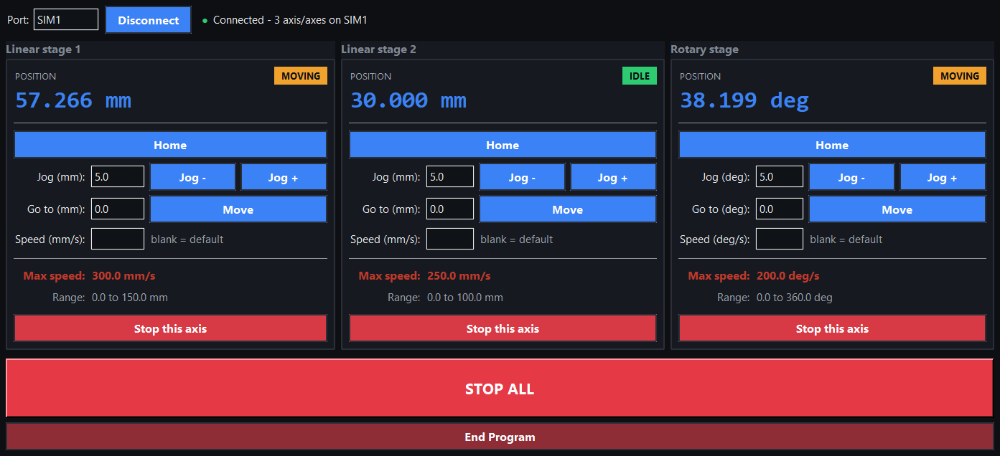

A desktop control panel for linear and rotary motion stages. Python and tkinter.
This is a simulated stand-in for professional work I can't share publicly. It reuses the same control panel and the same hardware-abstraction approach, wired to a simulator instead of the real stages.

This is a desktop app, so it runs locally rather than in the browser:
python stage_console.pyView the code on GitHub